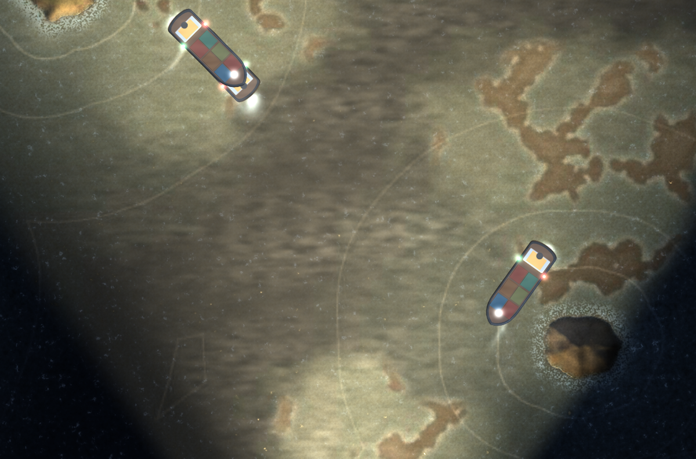

Light the way between the islands.
A calm strategy game for iPhone and iPad, played on a dark sea chart.

Ships wait in every harbour; between them lie reefs, shoals and fog. Build lighthouses on headlands and offshore rocks, keep the shipping lanes lit, and bring the ships home. Every ship that arrives pays credits, every light burns oil, and you decide where the next lamp goes.
- Three kinds of light. Cheap steady lamps, far-reaching sweep lights, and sector lights you aim down a channel.
- Twelve fictional coasts. Short shifts of four to six minutes, each darker than the last: more ships, meaner reefs, thicker fog.
- Fair leaderboards. Everyone plays the same coast, ships and weather. One Game Center board per coast and one overall, Global and Friends.
Coasts 1 to 3 are free. One purchase unlocks coasts 4 to 12. No ads, no subscription, no data collected.